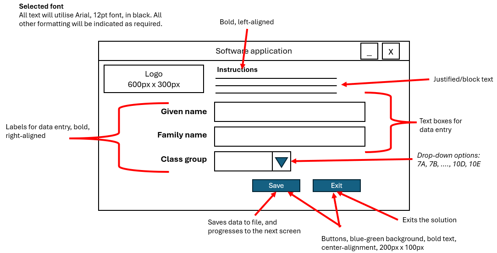
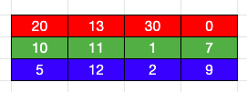
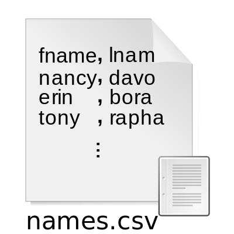
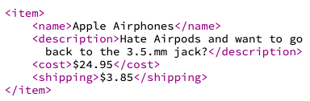
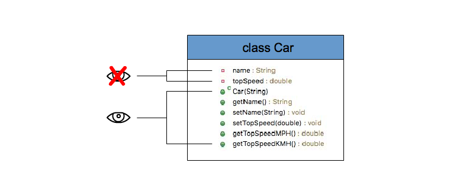
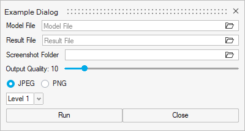
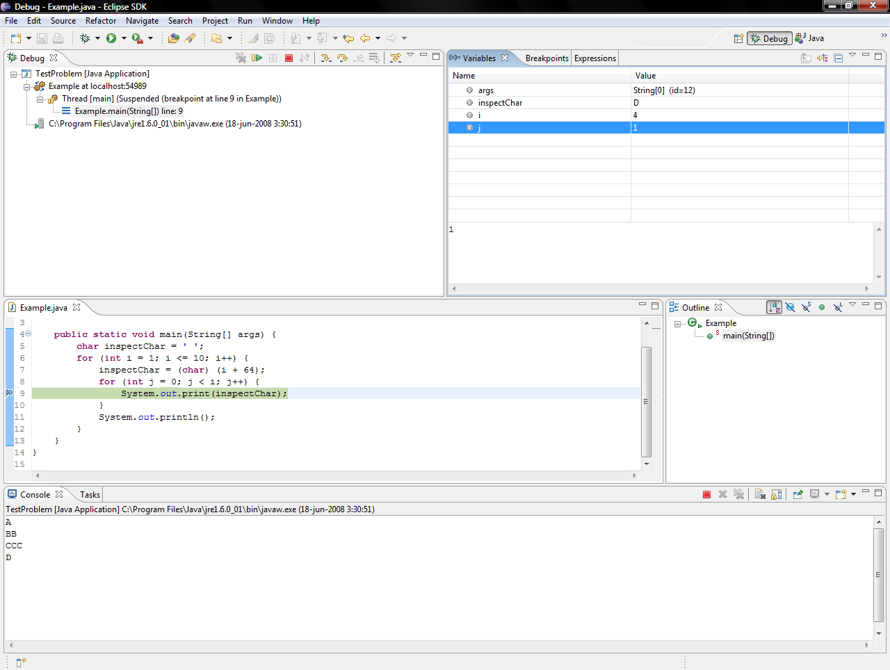
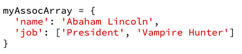
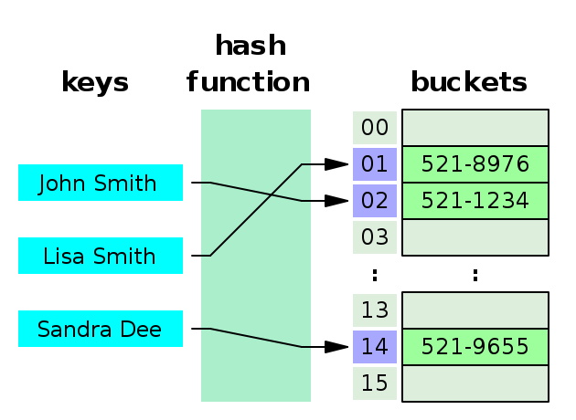

Unit 3 AOS1 – Programming
Emerging trends in programming
*This is new and evolving, we are starting with definitions and will look at the sample exam
What is AI? Artificial intelligence (AI) is technology that enables computers and machines to simulate human learning, comprehension, problem solving, decision making, creativity and autonomy. (credit IBM)
Using prompts to generate code
Prompt: A prompt is an input created by a user given to an AI which will provide a response based on the prompt. An example is pasting in some code and asking for the AI to find the errors, and the response should identify any errors in the code.
- Based on a single or a series of prompts, generative AI platforms are able to generate code quickly.
- The benefits of generating code using prompts include, but are not limited to:
- increased productivity due to reduced development and debugging times
- reduced development costs
- enabling non-developers to be able to generate functional code
- reduced need to develop deep expertise in multiple languages
- automated code documentation and improved code quality
- potential support of problem-solving and innovation
- The disadvantages of generating code using prompts include:
- potential for bugs and errors to be present
- reliance on trial/error and specific prompts being used
- risk of vulnerabilities and threats being present
- copyright concerns
- limited context or situational understanding
- dependence on human oversight
An example of a prompt to generate a module that takes two values and outputs the sum and product of the values could be:
Create a program in [chosen OOP language] that takes in two integer values and then outputs the sum, product and average of the values. The output should be labelled.
Automated debugging and testing of modules
Automated debugging: Using tools to find bugs/issues with code, and then any errors can be fixed with minimal user input.
Automated testing of modules: Using tools automatically created testing for modules which can be run.
These techniques increase the efficiency of the testing process.
- Automated debugging and testing tools have been a common component of Integrated Development Environments (IDEs) for some time.
- The benefits of testing modules using automated debugging and testing include, but are not limited to:
- real-time identification of issues with code
- suggested fixes to code
- rapid feedback
- consistent approaches to debugging and testing
- improved code quality
- The integration of AI into automated debugging and testing tools has both improved and introduced challenges to the testing of modules.
- Improvements include:
- increased productivity
- enhanced accuracy
- scalability
- identification of issues before they occur
- Challenges include:
- incorrect flagging of code as containing errors or missing subtle issues
- dependency on training data
- reduced job opportunities for developers and testers
- Examples of automated debugging and testing tools include, but are not limited to:
- Python IDEs: Behave, Lettuce, Robot, Pytest, TestProject
- Visual Studio: Live Unit Testing, IntelliTest,
- PHP: Codeception, Selenium.
Code optimisation
Code optimisation: Process whereby you improve the code by making it more optimal, for example creating more efficient code. AI can provide feedback as to changes which can be made to code.
- AI tools can be used to analyse code performance and suggest improvements to enhance efficiency in relation to runtime, memory usage, security or other technical requirements.
- Types of code optimisation possible using AI include:
- resource optimisation (CPU/memory)
- algorithm optimisation
- code simplification
- standardisation to organisational or industry rules
- security optimisation
- automated comment generation and summarisation
- Examples of tools that can assist developers with code optimisation using AI include, but are not limited to: GitHub Copilot, Tabnine, TensorFlow, Codeium.
Responsible and ethical use of artificial intelligence tools
Responsible AI is the practice of developing and using AI systems in a way that benefits society while minimizing the risk of negative consequences. It’s about creating AI technologies that not only advance our capabilities, but also address ethical concerns – particularly with regard to bias, transparency and privacy. (credit ISO)
- Developers should always utilise AI tools responsibly and ethically.
- This includes:
- understanding the technical limitations of any AI tools being used or considered for use
- being transparent in their use of AI tools
- conducting thorough code reviews on all AI-generated code
- being aware of the potential for bias introduction
- avoid over-reliance on AI tools
- understanding the environmental impact of using AI tools
- respecting intellectual property, copyright and licensing agreements.
Characteristics of functional and non-functional requirements, constraints and scope
Functional requirements
Requirements detail what the software should do (functional requirements) and what it should be (non-functional requirements).
Functional requirements include specific details such as
- input required,
- output developed and
- functions of the solution including data manipulation and validation.
Non-functional requirements
Non-functional requirements (according to the Study Design) are:
- Usability,
- Reliability,
- Portability,
- Robustness and
- Maintainability.
Constraints
The four (4) types of constraints are:
| Examples (quoting the Study Design): | |
| Economic | cost and time; |
| Technical | speed of processing, capacity, availability of equipment, compatibility and security; |
| Social | level of expertise of users; |
| Legal | ownership and privacy of data requirements; |
Scope
“[Scope is] the part of project planning that involves determining and documenting a list of specific project goals, deliverables, tasks, cost and deadlines” - 2020 VCAA exam report
A list of the functional and non-functional requirements which either will be included in the solution or will not be included in the solution. Factors such as cost or time could lead to a requirement becoming out of scope.
Design tools
At VCAA’s Design stage, when you are designing how you are going to build your project, you would draw possible user interfaces, that’s called a mock-up. You can also add other details to your design such as pseudocode, a data dictionary and object dictionary.
Data dictionaries
Data dictionaries are used to design the data requirements of a software module. This includes, but is not limited to, variables, constants, objects and interface controls.
Represented using a table with the following fields included as a minimum:
- Name
- Data type
Additional fields may be included, as required, such as:
- Description
- Field size
- Validation rules
- Data sample
For example,
| Name | Data type | Description |
|---|---|---|
| strGivenName | String | User’s given name |
| strFamilyName | String | User’s family name |
| intAge | Integer | User’s age (calculated based on the provided date of birth and rounded down) |
Mock-ups
A mock-up is a detailed diagram that illustrates how a software module’s interface will look.
Annotations are used to describe the appearance (font, text colour, text size, alignment/justification, images to be sourced, control properties) and the structure (required controls, functionality, default values, control size, control properties).
Annotations may also be used to explain how design principles and the characteristics of user experience have been incorporated, or to justify design choices that have been made.
A sample mock-up is found below:

Object descriptions
An object description is used to design an object to be used within a software module.
Object descriptions include the name of the object, a list of the required attributes/properties (data) and a list of the required methods (behaviours) that are required to maximise the potential future use of the object.
The data type of each property/attribute may or may not be listed with the property/attribute.
Where required, parameters should be included in the description of methods.
A sample object description is found below:
| Name | Dog |
| Properties/ Attributes | Name (string) Breed (string) Age (integer) Colour (string) |
| Methods | bark() eat(food) wag_tail() |
IPO charts
IPO charts provide a brief overview of the inputs and outputs of a task, and outline the transformations (processes) required to generate the output/s from the input/s. IPO charts are represented using a table, with columns for Input, Processes and Outputs. Separate IPO charts should be used when multiple tasks are being represented.
A sample IPO chart is found below:
| Input | Processes | Output |
|---|---|---|
| User uploads file containing a series of numbers | Calculate sum and average of the numbers | Display sum and average of numbers Output values to file |
Pseudocode
Pseudocode is a way of writing out algorithms in a language-independent way.
Pseudocode is a design tool for representing algorithms using a combination of structured English and common symbols. Pseudocode utilises reserved words within algorithms.
Pseudocode for you: If you’re solving a problem in code, it often helps to spell out the steps your code should do, in a loose or high level way without worrying about specific code syntax or knowing how to do something. (Teacher: I often leave a trail of English comments in code and then replace them with actual line by line).
This:
- Helps you break down and understand the program faster and easier, since you aren’t worrying about/thinking about code syntax.
- You could(?) show this to another program who doesn’t know the language you’re using to have them check over your logic.
- Able to find errors in the program before development
Pseudocode for VCAA: VCAA also mandates the use of specific pseudocode that you will read and write on the exam (see next two pages).
- Pseudocode blocks must commence with BEGIN and conclude with END.
- Reserved words are represented within algorithms using bold text and capitalised.
- Indentation is used within pseudocode to indicate hierarchy within an algorithm to enhance human readability. Control structures can be nested using appropriate indentation.
- Values can be assigned to variables using the left-arrow (🡨) symbol or the SET keyword.
- Values can be input into the algorithm using the READ or INPUT keywords.
- Values can be output from the algorithm using the PRINT, RETURN or OUTPUT keywords.
- Selection control structures are represented in pseudocode using IF-THEN, IF-THEN-ELSE, IF-ELSEIF and CASE/SWITCH blocks.
- Iterative/Repetition control structures are represented using DO-WHILE, REPEAT-UNTIL, WHILE and FOR loops.
- Conditions can be joined using the AND and OR keywords.
- Lines may or may not be numbered.
Examples of high-scoring responses on the Exam
Examples to explain “why writing an algorithm in pseudocode can be a good idea” include:
| 2020 Q2 Short Answer | “It allows Camilla to have a more detailed idea of what the code will look like, helping her identify any errors in the real code faster. It also allows other developers to understand the program more easily if Camilla chooses to get help.” |
Guide to VCAA-exam style pseudocode
You will also be required to read and write a specific style of pseudocode on the exam.
Here are examples in exam-style pseudocode to express the following structures:
| Pseudocode example | Explanation | As seen in | |
| Begin/End | BEGIN // do something END | Always put around code | 2025 CS Q11 |
| Function | BEGIN FunctionName(x, y) // do something END FunctionName FUNCTION FuncTwo(x, y) // do something END FuncTwo BEGIN FuncThree(x, y) // do something END | Not seen in 2025 SD yet | 2024 CS Q12 2023 MC Q1 2021 CS Q7 |
| Input | READ x INPUT x | Prompt the user for a value which will be stored in the variable x / Read a file | Tools and func doc |
| Reading data from a file | READ fileName | Reads a field and stores fields as variables for each row/record | 2020 CS Q9 |
| Output | PRINT x RETURN x OUTPUT x DISPLAY x | Output this value | Tools and func doc 2025 CS Q11 |
| Arithmetic | + - * / | For add, subtract, multiply, divide | 2018 SA Q1 |
| Mod | a mod 10 Likely, MOD | i.e. the remainder after division | 2018 CS Q6 |
| Array | a ← [1, 5, 9] a[0] // alternative syntax Array[] = [9, 8, 7] | 2019 MC Q3, 2018 MC Q6 | |
| Length | Len(anArray) len(anArray) Likely, LEN | 2018 SA Q5 CS Q6 | |
| If | IF age < 18 THEN // do something ELSEIF monthly_income < (rental_price * 3) THEN // do something else ELSE // do something ENDIF IF (a < 5) THEN // do something ENDIF IF dist >= 1.2 AND isCar = True THEN // do something ELSE // do something else ENDIF | Parentheses around condition are not required (but will make your work clear). Equals (=) does not need to be == as ← is used for assignment. | 2025 CS Q11 2019 MC Q14, CS Q11 2018 CS Q5 |
| If conditions | =, <, >, <=, >=, “not blank” Just variable name for checking true | 2025 CS Q11 2021 CS Q7 | |
| Switch | CASE/SWITCH Case Colour Blue: // do something // (tabbed in) Red: // do something // (tabbed in) End Case | 2019 CS Q11 | |
| For | FOR For i ← 1 to len(anArray) //do something EndFor For i = 1 to numThings // do something Next i | 2017 SA Q4 (exam report) | |
| For (with array) | a ← [1, 5, 9] For i ← 0 to End of a // do something Next | 2019 MC Q3 | |
| While | REPEAT-UNTIL, WHILE While (a < 5) // do something EndWhile | A Do...while loop is different from a while loop because the loop is guaranteed to execute at least once (because the code runs first, then the condition is checked) | 2018 MC Q5 |
| Do...while | D0 // do something WHILE (a < 5) | 2019 MC Q14 | |
| Comment | // | 2020 CS Q9 |
Data types
Here are some data types you should know:
| Definition | Examples | |
| String | Text, “a collection of characters (ASCII)” | ‘This sentence’ |
| Character | A single letter / number / symbol. | ‘A’ ‘2’ |
| Integer | A whole number (positive or negative). | 1, -7, 1000000 |
| Floating point | A decimal (positive or negative) | 0.1, 1.0, 3.1415 |
| Date/Time | Stores a date or time | YYYY-MM-DD 1994-09-02 |
| Boolean | A true or false value. Not to be confused with the strings ‘true’ and ‘false’. | True False |
You are expected to be able to select when each data type is appropriate to use for some given data. Additionally, you MUST use the full name of a data type when answering in an exam (2025).
Strings vs integers on the exam
On the exam, if you have a number but will not “treat it like a number”, it should have a string type. For example:
- Postcode, ID numbers
For these examples, does it make sense to take an average of that number? Or add two of them together? If not, then (again, apparently, in SD34) that makes it a string type variable.
Also, as soon as you include things like symbols or letters e.g.
- a phone number that is +614 555 555 or
- a credit card number that is 8888-0000
then you have to use a string not an integer (or be comfortable losing those characters).
Money e.g. $1234.56 is still floating point.
Data structures
One-dimensional arrays vs. records
From Javascript or Python you should be familiar with the idea of an array or list, which is a data structure that contains multiple items of data.
The SD 3/4 course distinguishes between:
| How many data types? | Indexed by… | |
| One-dimensional arrays | Only one e.g. just strings | Integer e.g. myArray[0] |
| Records | Multiple e.g. string and integer | Field e.g. myRecord[‘age’] |
This is relevant to languages like C.
Note: Sometimes the exam makes array indexes start at 0 or 1, read the question carefully.
Two-dimensional arrays

A two-dimensional array lets you store information like you would in a two-way table.
For instance, the example on the right could represent the number of runs scored in four cricket matches by three students.
Each row represents a student. So the first student scored 20 in the first game, 13 next game etc.
To retrieve a single item, use double bracket notation e.g. Array[1][3]. The numbers are row first then column. So Array[1][2] returns 1 (assuming arrays start at 0).
Data sources
Plain text and CSV files
A plain text file contains unformatted text.
- Common plain text files include .txt, .csv, .xml and other script files.
- Plain text contains information that is human-readable but is not stored as efficiently as in binary (as 1s and 0s).
- As it is only plain text, there are no data types associated with the information - everything comes out as string (or character) and would have to be converted if needed.

A CSV file is a specific type of plain text file that:
- Stores multiple records (different lines of the file)
- Separates different values in the record by a comma.
An example of a CSV file (from Wikipedia) with 2 fields and 3 records is shown on the right. Notice that the first line describes what the fields are (this is not required but is useful).
| Advantages of CSV | Disadvantages of CSV |
| Simple format to encode and decode, so it is used to pass data between different systems e.g. database to an LMS to Excel. Compared to XML, is concise/short, since you aren’t adding tag names everywhere. | It is really annoying and dangerous to add new fields, as every new line needs a new ‘gap’ for that field. There is a strong likelihood of mixing fields up as soon as you delete or add a comma somewhere. |
XML

XML is another markup language with tags just like HTML. Unlike HTML it doesn’t have a standard set of tags to use - you get to write your own depending on what suits you. This makes it really flexible for describing data.
All XML documents start with a declaration (or “prolog”) to tell you what version of XML and character set it is using e.g.
<?xml version="1.0" encoding="UTF-8"?>
On VCAA exams, they emphasise the concept of storing records with fields, just like a CSV file (obviously laid out differently in the XML file).
In the above example, item is a record, and name/description/etc. are fields.
| Advantages of XML | Disadvantages of XML |
| Works well with data that has hierarchy. CSV is good for data in a two-way table, but XML works when you have relationships e.g. nesting tags. XML is easy-to-read for humans, not just computers. It is well-structured so a computer can read it, and it has field names next to data in plain English so humans can understand it. | A lot of an XML document is taken up by tags which you write out again and again - imagine with the example above that we have 100 products. Now we are writing out all those tags 100 times. This is not memory efficient, and a human’s eyes will glaze over staring at it. |
Examples of high-scoring responses on the Exam
Examples to explain an advantage of XML include:
| 2018 Q15 MC | “It provides a common structure for sharing data between applications” |
| 2017 Q9 Case Study | “The format being used is XML. The advantage of using XML is that it is a lot more readable, than other formats like CSV, as it is structured. This is because the field names are next to the data so you don’t need to go searching like in CSV. This makes looking and interpreting data quicker and easier.” |
Principles of OOP
Abstraction
Abstraction involves hiding the complex implementation details of a class and exposing only the necessary and relevant parts to users.
Benefit of Abstraction:
- It simplifies interaction with classes/objects allowing users to focus on what a class/object does rather than how it does it.
An example of abstraction is found below:
Applying the process of abstraction to a Dog
Identify the most relevant properties/attributes of a dog. Ignore/omit any that are not immediately relevant to the situation. In this case, Name, Breed, Age and Colour are required.
Define common Dog behaviours. In this case, barking, eating and wagging its tail are required to begin with.
| Name | Dog |
| Properties/ Attributes | strName strBreed intAge strColour boolTrained |
| Methods | bark() eat() wag_tail() |
Encapsulation
Encapsulation is the practice of bundling the data (attributes) and methods (functions) that operate on the data into a single class. It restricts direct access to some of a class/object’s components, which helps to protect the integrity of the data and prevent unintended interference and misuse.

Benefits of Encapsulation:
- Protect the integrity of the data and prevent unintended interference and misuse.
Example: Set a data member in a class i.e. name to private, and then use “getters” and “setters” to allow access to the data member.
An example of encapsulation is found below:
Applying the process of encapsulation to the Dog class
- Keep properties/attributes private (using access modifiers)
- Define public methods to safely read or modify the properties/attributes
- In this case, creating a get and set method for each property/attribute.
- Ensure that the properties/attributes and methods that use the data are together in the same class.
| Name | Dog |
| Properties/ Attributes | private strName private strBreed private intAge private strColour private boolTrained |
| Methods | bark() eat() wag_tail() getName() / setName(name) getBreed() / setBreed(breed) getAge() / setAge(age) getColour() / setColour(colour) getTrained() / setTrained() |
Generalisation
Generalisation is a process where shared attributes/properties are extracted from two or more classes and combining them into a generalised superclass.
Benefit of Generalisation:
- This allows for the creation of a more abstract representation of common features, promoting code reuse and reducing redundancy.
A sample of generalisation is found below:
A developer has created a Dog class and a Cat class.
- A dog object has the same attributes and methods as the previous examples.
- A cat object will have a name, breed, age and colour, as well as purr, eat and catch mouse as methods.
After identifying the shared attributes and similar methods, the developer decides to create a Pet superclass.
The result is below:
| Name | Cat (extends Pet) | Dog (extends Pet) | Pet |
| Properties/ Attributes | private boolTrained | private strName private strBreed private intAge private strColour | |
| Methods | purr() overrides make_noise() catch_mouse() | bark() overrides make_noise() wag_tail() getTrained() setTrained() | make_noise() eat() getName() / setName(name) getBreed() / setBreed(breed) getAge() / setAge(age) getColour() / setColour(colour) |
Inheritance
Inheritance is a mechanism where a new class (subclass) inherits attributes and methods from an existing class (which in turn becomes a superclass). This allows the subclass to reuse code from the superclass, extend its functionality, and promote a hierarchical relationship between classes.
A sample of inheritance is found below:
| Name | Shape | Circle (extends Shape) | Rectangle (extends Shape) |
| Properties/ Attributes | private colour(integer) private bThick(integer) | private radius (floating point) | private length (floating point) private width (floating point) |
| Methods | draw() calcPerimeter() calcArea() | drawCircle() overrides draw() getDiameter() calcCircumference() overrides calcPerimeter() calcArea() overrides calcArea() | drawRectangle() overrides draw() calcPerimeter() overrides calcPerimeter() calcArea() overrides calcArea() |
Benefits of inheritance:
- Code reusability as existing methods and attributes from the parent class can be used in multiple subclasses to avoid duplication
- Parent classes are extensible and subclasses can therefore include additional functionality that does not exist in the parent class
- Improved maintainability as updates from parent class will automatically update in the subclasses
- Reduced development time as attributes and methods can be inherited and will not need to be rewritten.
Features of a programming language
Local and global variables, and constants
Local variables: Local variables are declared in a function or similar. They are only accessible within the scope in which it is defined, i.e. a variable declared inside a function can only be used inside the function
Global variables: Global variables are declared outside of any functions or similar. They are accessible from any part of a program.
Constants: Constant variables are variables which cannot have their value changed after assignment.
Data types
A data type is an attribute associated with something, such as a variable, which defines its type and how the computer should interpret its value. (from here)
Instructions and Control structures
An instruction is an operation which is executed by a computer processor. I.e. a line of code in a high level programming language like JavaScript.
There are 3 control structures in this course:
| Explanation | Example | |
| Sequence | Instructions that execute after each other i.e. most lines of code | a ← 5 b ← a + 1 |
| Selection | A decision or condition e.g. if/else statements, case/switch | If (a > 6) Then a ← 0 EndIf |
| Iteration/Repetition | Loops e.g.
| While a < 10 a ← a + 1 EndWhile |
Arithmetic, logical and conditional operators
**TBA syntax from VCAA, remember the exam is not language specific
| Arithmetic operators | Output | Example |
| x + y | Adds x and y | 3 + 5, Output: 8 |
| x - y | Substracts y from x | 5 - 2, Output: 3 |
| x * y | Multiplies x and y | 3 * 5, Output: 15 |
| x / y | Divides x by y | 10 / 5, Output: 2 |
| x % y | Remainder of the division of x by y | 15 % 4, Output: 3 |
| x++ | Adds one to x | x = 3, Output: 4 |
| x-- | Subtracts one from x | x = 3, Output: 2 |
| Logical operators | Output | Example |
| x AND y (&&) | Returns true if x and y are true, otherwise returns false | x = true, y = false, returns false |
| x OR y (||) | Returns true if x either or y are true, otherwise returns false | x = true, y = false, returns true |
| !x | Inverts the boolean value | x = true, returns false |
*VCAA probably means comparison operators, conditional refers to ternary statements
| Conditional operators | Output | Example |
| x < y | Returns true if x is less than y | x = 3, y = 5, returns true |
| x > y | Returns true if x is greater than y | x = 3, y = 5, returns false |
| x <= y | Returns true if x is less than or equal to y | x = 3, y = 3, returns true |
| x >= y | Returns true if x is greater than or equal to y | x = 3, y = 5, returns false |
| x == y | Returns true if x and y are equal | x = 3, y = 5, returns false |
| x != y | Returns true if x and y are not equal | x = 3, y = 5, returns true |
Graphical User interface (GUIs)
A Graphical User Interface allows a user to interact and provide input into a computer/program.

Functions, procedures and methods
- A function is a named set of instructions. (returns a value VCAA 2023)
Function vs procedure:A function returns a value, but a procedure does not.Both(?) can take inputs (arguments/parameters).
- A method is the name for a function in a class (see below). (doesn’t return a value VCAA 2023)
Classes and objects
- Classes are a concept in Object-Orientated Programming (OOP), which allows you to group together related data values and functions.
- A class “defines the appearance and behaviour of an object” (2020 Sample Q4 Short Answer).
- An object is an instance of a class. An object has its own data members (attributes) and methods, where the object is instantiated from the class.
Naming conventions
“I honestly didn't think you could even USE emoji in variable names. Or that there were so many different crying ones.” XKCD #1513
A naming convention is a consistent format for writing names.
- E.g. camelCase
- You would use it for names of e.g. variables, functions, classes, files
- This is a different concept from writing meaningful names (which is useful but is a “characteristic of internal documentation”).
Why do it?
- Consistent naming conventions make code easier to read - by yourself in the future or by someone else.
- Making it easier to read means it is faster to read someone else’s or old code and fix bugs or add new functionality.
- Some conventions make it easier to see what a name represents e.g.
- ‘Only starting with a capital letter’ for classes
- Prefixing with data type in Hungarian notation
Here are some examples of naming conventions (there is no definitive list in the Study Design):
| Examples | Notes | |
| camelCase | iPhone, eBay | Used in JS. |
| snake_case | first_name | Used in Python. |
| Hungarian notation | intAge, fnMyFunction boolHasFun | This is camelCase with a prefix for what kind of object it is (or data type) OR its semantic use. Microsoft uses it with C. FYI, there is a long list of pros and cons around using it found here. |
Examples of high-scoring responses on the Exam
Examples to explain how naming conventions assist in software development include:
| 2019 Q7 Case Study | “One convention used within the data dictionary is the use of lowercase letters at the start of the variable name, which indicates which data type is stored by the variable. Including data type in the name of the variable can make development and testing easier for Ryan as the type of data expected to be stored within a variable is clearly indicated.” |
| 2015 Q1b Short Answer | “One naming notation is Hungarian notation such as ‘btnExit’, in which the first letters are what the object is, such as button (btn) or textbox(txt) and the second half describes the purpose of the it. For example, in btnExit, the ‘Exit’ is the purpose of the button. This makes programming better as the developers will be able to understand what the object is and its purpose, so they can code it more efficiently and will less errors.” |
Validation techniques
When importing data into a software project from e.g. user input (a web form) or a file, the imported data should be validated. This means that it is in the form expected.
Validation is useful because:
- Your code will be able to use the data without creating errors
- If the person inputting the data or generating the file has made a mistake, they can be made aware so they can fix it
- The code is not susceptible to some types of cyber attack
There are 3 types of checking specified in this course:
| Explanation | Example | |
| Existence check | Is the input field blank? OR | E.g. they pressed submit and nothing was entered. |
| Type check | Is it the right data type? | E.g. Age should be a number |
| Range check | For a numeric type, is it within an allowable range. | Age should be between 0 and 120(?). |
The order to run these checks is: Existence, then Type, then Range.
Purposes of internal documentation
“Purposes of internal documentation” includes:
- explaining and justifying data and code structures
- code maintenance
- placeholder comments for future development (stubs)
Using internal documentation,
- Makes it easier to read
- For other developers
- For the original developer returning to the code after time
- This makes it easier/faster/cheaper to maintain
Explaining and justifying data and code structures
- This is useful so others can see the thought process of the developer
- Can explain why specific design choices were made
- Help preserve important decisions i.e. decisions made for efficiency
When writing comments, these are examples of identifying/outlining/describing/explaining and justifying in the context of a data type:
| Keyword | Potential phrases | Example |
| Identify | “uses”, “is a” | This variable is a string |
| Outline | “used to store”, “used to keep track of” | This string is used to store weekly results |
| Describe | “contains”, “consists of”, “includes” | The string contains a sequence of characters where each character represents a win or loss |
| Explain | “so that”, “allows the program to”, “enables” | This string, which uses characters to represent a win or a loss, is used to loop through each character to count wins and losses and analyse result patterns |
| Justify | “most appropriate because”, “more effective than” | This string, which uses characters to represent a win or a loss, is appropriate because the data is sequential and simple, making it easy to loop over as characters. This is simpler and more efficient than storing each result in separate variables or nested structures |
Code maintenance
- Important to ensure code stays up to date with,
- Fix bugs
- Stays secure
- Utilises new functionality
- Continues to be efficient and optimised
- Language versions
Placeholder comments for future development (stubs)
- Provide a blueprint for current/future developers to add in additional code
- Helps to see where code is missing
//TODO: Add function to start the program running
These notes are from the 2020 - 2024 Study design:
“Internal documentation” includes:
- Comments
- Meaningful names for variables, functions, files etc.
Reasons to use internal documentation are:
- Makes it easier to read
- For other developers
- For the original developer returning to the code after time
- This makes it easier/faster/cheaper to maintain
Meaningful names is different from naming conventions:
- Meaningful names means that the names are descriptive
- Naming conventions means that they are written in a consistent way
E.g.
Meaningful but not consistent: aGe, SCORE, healTH
Consistent naming convention but not meaningful names: strA, strB, strC
Examples of high-scoring responses on the Exam
Examples to explain why internal documentation are important include:
| 2019 Q12b Case Study | (2 marks) Outline two advantages of including internal documentation. It makes it easier to edit in the future, as the function of all code is clear. Another advantage is that it reduce cost for SmallPort Financial if they need the code maintenance because the programmer can easily identify what the module does which would reduce maintenance cost. |
| 2017 Q1 Short Answer | (4 marks) “The use of a naming convention, such as Hungarian notation, throughout provides those reading the code with a better understanding of the variables, functions and procedures and their purpose. For Vanessa, meaningful names will assist her testing of the program by helping her to understand what each element represents.” |
| 2015 Q1a Short Answer | (2 marks) Example 1: “Internal documentation will aid the company in the future in maintaining or repairing the code, as whoever is reading and editing it can understand its purpose.” Example 2: “Internal documentation is beneficial as it provides meaningful comments which may help Annalie understand Sam’s code. As they are both working on the project together, this is necessary.” |
Search and sorting algorithms (deck for reference)
Overview
Here is an array of words:
| vomit | chuck | munt | spew | chunder | retch |
Two common things we want to do to this information include:
- Sorting: let’s put this list in e.g. alphabetical order
- Searching: let’s check whether this list contains e.g. ‘sneeze’.
In this course we study two algorithms (each) for sorting and searching:
| Sorting | Searching | |
| The dumb way | Selection sort | Linear search |
| (One) better way | Quick sort | Binary search |
This is unfair - doing things the simple or ‘dumb’ way can make sense if you’ve got small amounts of data (or limited memory for quick sort). But in general, doing a quick sort or binary search is faster (more efficient) than the alternative.
Selection sort
Selection sort is “get each slot right”.
- Find the smallest item in the list. Swap it with the item in the first slot.
- Then move on to the second slot, and so on.
Here is an example of this procedure in a GIF:
https://commons.wikimedia.org/wiki/File:Selection-Sort-Animation.gif
Quick sort
Quick sort is a ‘divide-and-conquer algorithm’ i.e. split the array into two smaller parts, and get each part right.
Here’s how it works:
- Pick an item in the array, called “the pivot”. (It doesn’t matter what item, you will probably be told what e.g. the last item).
- Make up two arrays of values, above and below the pivot.
- Repeat the above two steps on each of these arrays etc.
Linear search
Just look at the items in order until you find it.
| Advantages | Disadvantages |
|
|
Binary search
I am thinking of a whole number between 1 and 100. What’s the best guess to make?
If you said 50, you already understand a binary search.
- Start with a sorted list.
- Look at the middle value and check if you need to go higher or lower (in this case, look at the list of items above or below the middle).
- Repeat.
Even with the extra time to sort this list first, for large amounts of data this still tends to be faster than a linear search.
When you have an even number in a list, go lower for selecting point
(VCAA 2020 Case study Q10)
Examples of high-scoring responses on the Exam
Examples to explain searching techniques include:
| 2018 Q4 Short Answer | (4 marks) Outline a more efficient searching technique (than linear search). Justify why this technique is more efficient (on 5000 records). Example 1: Binary search is more efficient than linear search however requires the records to be sorted. Binary search involves reducing the list by half in every step while linear search involves searching every individual record to see if it matches the desired record. With 5000 records, the average time taken to search is significantly less in binary search then linear search making it more efficient. Example 2: A binary search is a more efficient searching technique compared to a linear search. A binary search requires a sorted data set. While a linear search checks through each record, a binary search compares your wanted value with the midpoint, and discards half of the data set which is not required. This makes a binary search exponentially more efficient than a linear search. |
| 2017 Q10c Case Study | (3 marks) Name a more suitable search technique (than linear search). Explain why it is more suitable. Binary search – instead of comparing every value binary search compares target value to a midpoint and discards all values higher or lower than the target value, this results in significantly less comparisons as the array keeps getting halved until value is found, so the search is much faster for larger lists, because MBS is looking to expand their business for demand, their passenger numbers may grow to point where linear search is too slow so binary search should be used |
| 2016 Q3a Short Answers | (4 marks) Explain why an array must be sorted to find a record using binary search and how the record is found. An array must be sorted for a binary search as it uses recursive division. It picks a midpoint and compares the wanted value to it. If the wanted value if higher than the midpoint it discards all below it and vice versa. It then does the same thing to whichever half is left, repeatedly till the midpoint = the wanted value. If the list was unsorted, the wanted value could end up in the half that gets discarded as it’s not in the correct order, and thus, doesn’t get found. |
Types of errors
| Error type | Explanation | Example |
| Syntax errors | Errors in the syntax for the given coding language. These errors prevent code from compiling. | Incorrect indentation in Python |
| Logic errors | Errors in code that result in the solution generating incorrect output, such as calculations or evaluating conditions. | Returning a square root when the function was intended to return the square of a number. |
| Runtime errors | Errors that arise during program execution that result in the solution crashing if not handled correctly. | Trying to call a function that does not exist. |
| Runtime (overflow) | Attempting to store a value which is too large or too small for the data type | Trying to assign a number past the maximum allowed |
| Runtime (index out of range) | Attempting to access an element in an array which does not exist | Accessing element 10 in an array of length 5 |
| Runtime (type mismatch) | Attempting to complete an operation with an incompatible data type. *language dependent | Using a boolean with a conditional operator compared to a number |
| Runtime (divide by zero) | Trying to divide a number by 0 | “” |
Testing
Use of breakpoints
Breakpoints are used to pause/stop a program at a specific spot in its execution for the programmer to debug.

Use of debugging statements
Debugging statements are statements such as print statements to see the execution or values of data during execution.
Test cases comparing expected and actual output in testing tables
Use a test table to record the results of testing.
- Choose some data to send through your program.
- Write up the expected and actual results - if they’re different you’ve got a problem!
E.g.
| Test No. | Test data | Expected results | Actual Results |
| 1 | name ← “Harry’s parents’ | ‘Dead’ | ‘Dead’ |
| 2 | name ← ‘Voldemort’ | ‘Dead’ | ‘Alive’ |
Construction of relevant test data
The aim of testing is to be as exhaustive (complete) as possible. Some tips on picking data to test include:
- Get all the combinations for any decisions i.e. if/else statements you have.
- If your conditions are numerical e.g. if x >= 30, always include the boundary i.e. 30.
When doing data validation, you should include valid and invalid test cases.
Note: The Exam seems to really care about the boundary values. (The actual correct answer is something above, below and at your boundary.)
E.g. for this pseudocode:
IF age >= 18 and hasLicence = True THEN
...
You should check: ages above, below and equal to 18, and both True and False values for hasLicence. This gives you 6 combinations:
| age | hasLicence | Expected results | Actual Results |
| 17 | True | ||
| 18 | True | ||
| 19 | True | ||
| 17 | False | ||
| 18 | False | ||
| 19 | False |
PRIOR TO 2025 STUDY DESIGN CONTENT
Data structures
Associative arrays (or dictionaries)

An associative array stores data as a collection of key:value pairs.
The value is the data that you want to store. We retrieve values by searching for the key.
- Use an associative array when there are two sets of information that need to be linked.
- You can make the value an array to store more information (like ‘job’ above).
- Keys must be unique. If you have non-unique keys, you may have to swap the keys and values, or use something else.
- Retrieving values is efficient if the associative array uses a hash table (explained below).
- Associative arrays are called dictionaries in Python and are related to objects in Javascript.
Examples of high-scoring responses on the Exam
Examples to explain why you would use an associative array instead of a one-dimensional array include:
| 2018 Q3 Short Answer | “An associative array contains a key and value. In this case the staff member’s name would be the value and the key would be the title of the report. Using an associative array means that staff will be able to search for who has borrowed the report since each report is assigned a value (staff member’s name). This option is better than a one-dimensional array since there are two categories needed to be recorded, the staff name and the report title, which a one-dimensional array cannot do.” “An associative array allows for two values to be paired, and lookups to be performed based on one specific value (in this case, the report title). If the data were to be stored in a one-dimensional array, it would not be possible to link reports with the staff member’s names. Additionally, associative arrays allow for many reports to be assigned to a single name, which is required for the solution.” |
Hash tables
Most associative arrays implemented in high-level programming languages use something called a hash table to store values. The information in the associative array is actually stored in memory as a normal one-dimensional array. Something called a “hash function” takes the key and transforms it into a number. The value for that key:value pair is stored at that number’s location in the array.
Here is an image of a hash table at work from Wikipedia:

- The first key:value pair is ‘John Smith’: ’521-1234’.
- To store a value, a hash function converts the key into a number: “John Smith” becomes 2.
- The value is stored at this location (the number 2 bucket) in the array.
- To retrieve a value, you can run the key through the hash function again and find which bucket the matching value is in.
If there are multiple values that need to go in the same location or bucket, you can write key:value pairs into an array at each bucket. Then when you need to retrieve a value, you find the right bucket and do a linear search through the array there.
Hash functions are beyond the scope of this course.
Stacks, queues and linked lists
PROBABLY NOT ON COURSE
Are these data structures on the course? It’s really unclear. Let’s learn the minimum about them just in case.
Stacks, queues and linked lists are found in low level languages.
With a stack (like a stack of pancakes or books) you can only access the top item (otherwise the stack falls over?). This is the last item you put on the stack. So a stack operates on the principle “last item in, first item out” (LIFO).
With a queue (like a queue at the cafeteria), only the first item is accessible, just like how only the first person in a queue is the one who gets served (no cuts!). We call this principle “first one in gets to be first one out” (FIFO).
A linked list is a data structure where the data is not stored in memory next to each other, but instead with each piece of data also tells you the location of the next piece. Yes, a linked list is a scavenger hunt. So you can’t just access item number 3 directly, you have to go through item 0, 1 and 2 first.
Documenting a problem, need or opportunity
One of the first steps in starting a project is to think about why you are building it: what problem is it solving.
On the 2020 Exam, Multiple Choice Question 2 asked “Which of these is a way to document a problem, need or opportunity?”. The correct answer was: “writing a problem statement”.
Testing
Trace tables
You use a trace table to step through code and find problems. It’s basically writing out on paper the value of variables at each step of the code.
The columns in your table should be: variables, any output/print and conditions tested by e.g. if or while. Here’s an example:
| health ← 5 time ← 0 While health < 10 health ← health + 3 time ← time + 1 EndWhile print health + time |
|
|---|